In this writing, I want to share how two lines starting with three slashes wrote a description into a measure from DAX query view, and how deleting the same two lines left that description exactly where it was.
My plan was simple. Microsoft Learn now documents measure descriptions in DAX query view, and I expected the /// lines to behave like a switch: type them to add a description, delete them to take it away. Fifteen of the sixteen measures in my model had no description at all, so I wanted to learn the syntax on one measure, follow it into the TMDL files and Git, and then let AI write the rest. Adding worked the first time. Taking it away did not work at all, and that is the part I want to write about.
1. Fifteen Measures Without a Description
I ran everything in Power BI Desktop version 2.158.1304.0, the September 2026 release.
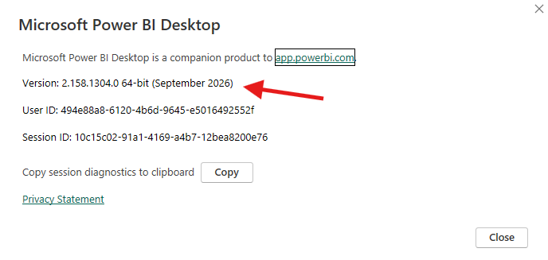
The model is directlake_import_composite, the composite model behind my contoso_project report, part Direct Lake and part import. As in my last post, I was live editing it from Power BI Desktop with the project saved as a PBIP, and VS Code and Git were open on the same folder. All sixteen measures live in one table, _Measures, in display folders named Base, Helpers, Prior Year, and YoY.
Before changing anything, I asked the model which measures had no description. INFO.MEASURES() returns one row per measure with a [Description] column, so a filter on that column is the whole query.
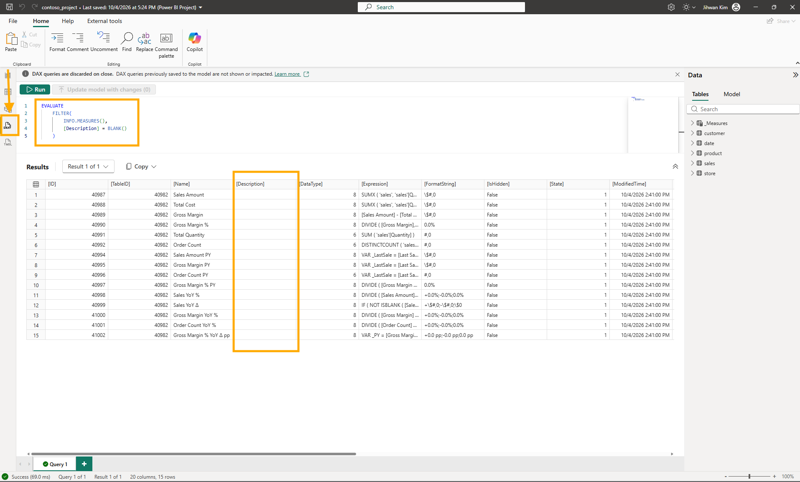
Fifteen rows, and every one of them has False in [IsHidden]. The sixteenth measure, Last Sales Date, is a hidden helper that already had a description, and it comes back later in this post. Every visible measure in the model had an empty description.
2. What the Documentation Says About Three Slashes
The Add measure descriptions section of the DAX Query View article describes the feature in three steps: add one or more /// comment lines directly above the MEASURE definition, select Update model with changes, and the description is saved to the model along with the measure definition. The same section says the triple slash is the syntax TMDL already supports for measure and function descriptions.
That made it familiar. In the Descriptions section of the Tabular Model Definition Language (TMDL) article, descriptions are written on top of each object declaration with triple slashes, and no whitespace is allowed between the end of the description block and the object type token. I had already put three slashes above a FUNCTION in DAX query view when I wrote Building a Portable Time Intelligence Library with DAX User-Defined Functions. This time the target was a measure.
3. Two Lines Above Sales Amount
I started from the Data pane. Right-clicking Sales Amount and choosing Quick queries and then Define and evaluate opened a new query tab with the measure's formula in a DEFINE block.
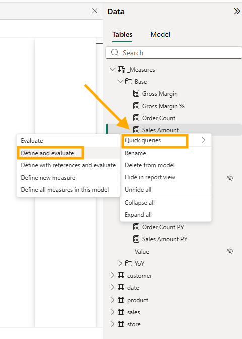
I added two lines above MEASURE and did not touch the formula. Two things changed on screen as soon as I typed them. A CodeLens line, Update model: Overwrite measure, appeared above MEASURE, and the button in the command bar became Update model with changes (1).
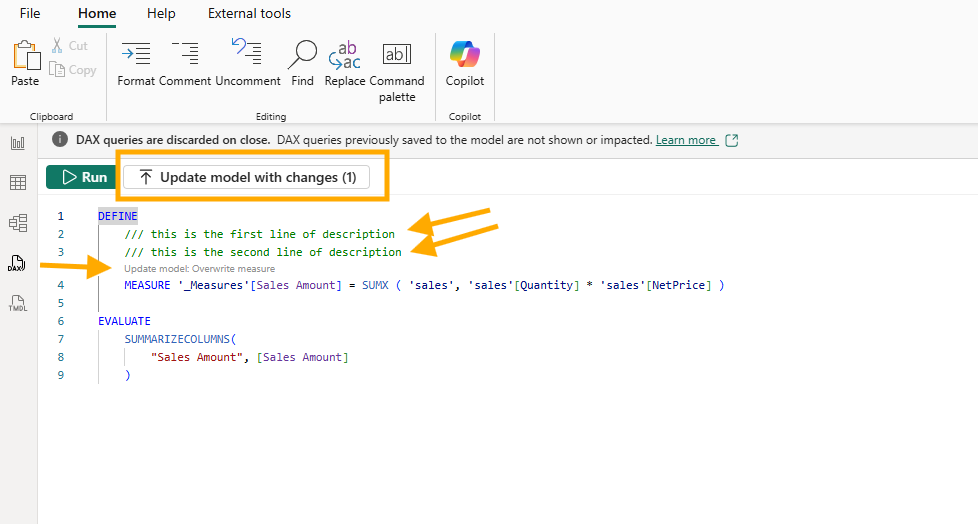
That surprised me a little. The Update model measures using CodeLens section of the DAX Query View article says the overwrite CodeLens appears for a measure already in the model when the formula in the query is different. My formula was exactly what Define and evaluate had generated. The two description lines alone were enough to count as a change.
I clicked the button, and Desktop asked me to confirm.
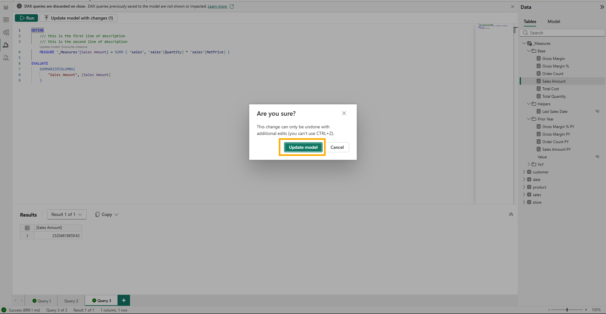
This change can only be undone with additional edits (you can't use CTRL+Z). That warning fits how I was working. In the Power BI Project (PBIP) section of the Learn About Editing Semantic Models in Direct Lake in Power BI Desktop article, remote modeling is live editing: every change is applied to the semantic model in the workspace immediately, and saving the local PBIP files is a separate step. The Saving section, two headings earlier in the same article, says there is no undo action as you make changes, and points to local Git techniques instead. So Update model wrote my two lines into the workspace model, and nothing had reached my disk yet.
The button went back to (0), and I saved the project.
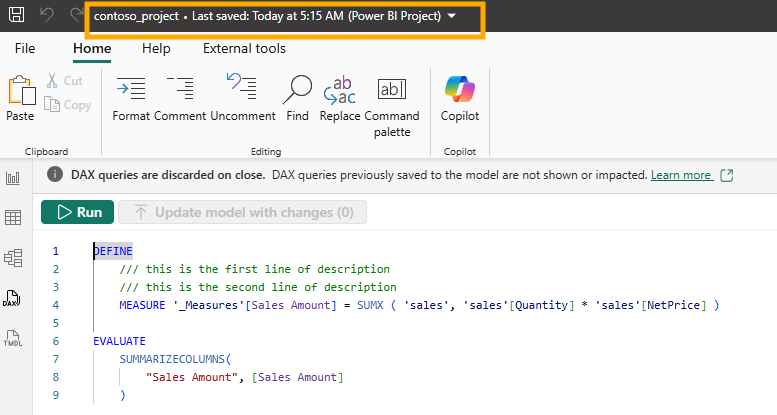
4. Six Changed Files for Two Lines of Text
VS Code listed six changed files under the semantic model folder.
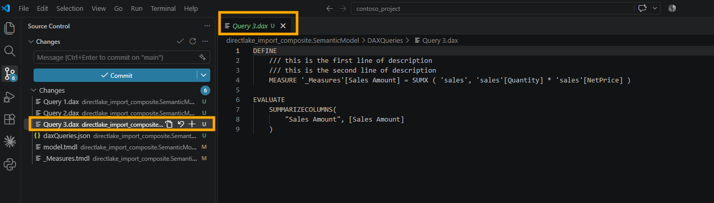
Four were new and untracked: Query 1.dax, Query 2.dax, and Query 3.dax in a DAXQueries folder, plus a daxQueries.json. Each open query tab became a file, and Query 3.dax holds the tab I had just used, description lines included. This one is easy to miss in the DAX Query View article, because it sits in a small heading, Saving of DAX queries, under Query tabs in the DAX query view layout section. It says that if you use developer mode to save a Power BI project, each query tab is included as a .dax file in the DAXQueries folder of the semantic model folder.
That took me a moment, because a banner across the top of DAX query view had said DAX queries are discarded on close the whole time. The DAX query view section of the Learn About Editing Semantic Models in Direct Lake in Power BI Desktop article settles it: the DAX queries aren't saved unless you're live editing with a Power BI Project (PBIP). I was, so they were.
The fifth file was model.tmdl, with one changed line.
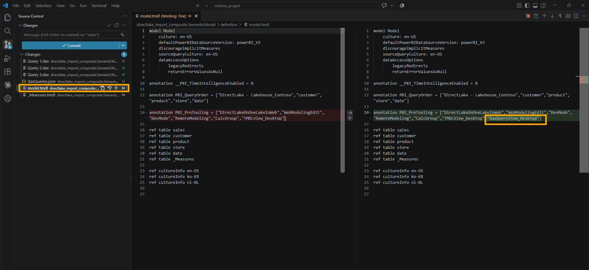
The PBI_ProTooling annotation gained "DaxQueryView_Desktop" at the end of its list. In TMDL View on the Web I watched the same annotation gain "TMDLView_Desktop", and what I wrote then still holds: I have not found Microsoft documentation for this annotation, so I read it as a record of which tools have touched the model, not as a model change.
The sixth file carried the meaning. _Measures.tmdl gained exactly my two lines, directly above the measure they describe.
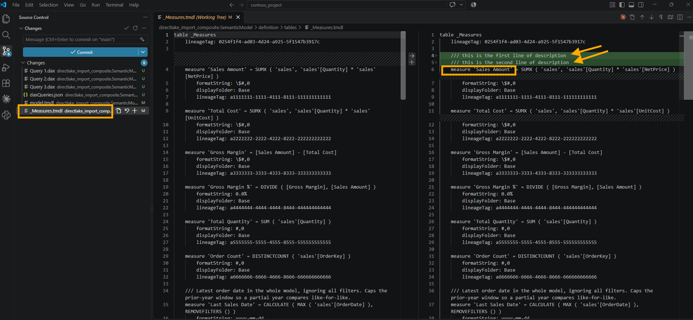
5. Deleting the Lines Changed Only the Query File
Then I tried to take the description away. In the same query tab, I deleted both lines and left the formula as it was.
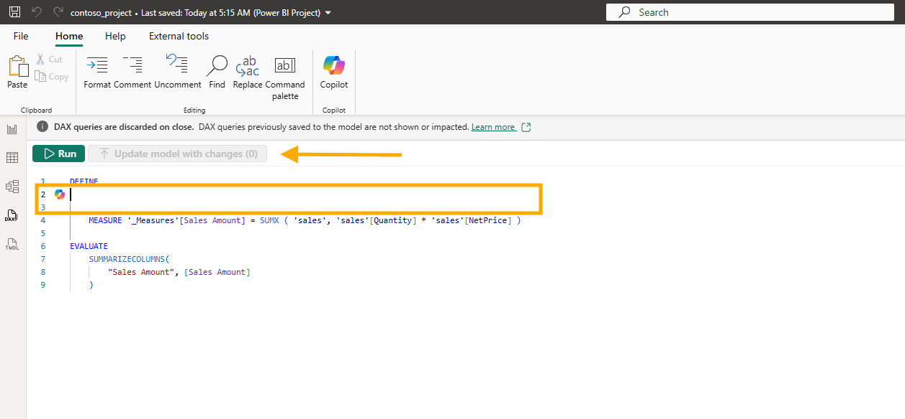
No CodeLens appeared, and Update model with changes (0) stayed greyed out. There was nothing to click, so I saved the project and looked at Git.
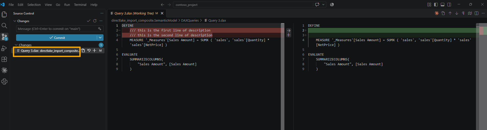
One changed file, Query 3.dax, where the two lines had become two empty lines. _Measures.tmdl was not in the list, and when I opened it, the description was still there.
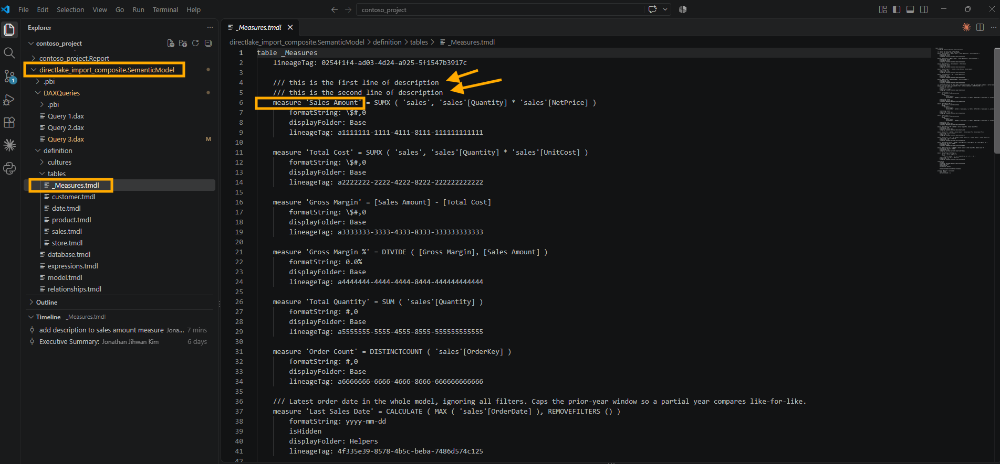
The DAX Query View article explains this once I read three of its sections together. The DAX queries section, the first one in the article, says measures in a DEFINE MEASURE block are DAX query scoped measures, running only in the context of the query, and that they reach the model only through the CodeLens or the Update model with changes button. Further down, under DAX query editor, the Update model measures using CodeLens part ties the overwrite action to a formula that is different, and mine was the same. Right after it, Add measure descriptions describes adding /// lines and says nothing about removing them.
So deleting the lines changed the query, not the model, and saving wrote the query to Query 3.dax, the same Saving of DAX queries behavior from section 4. My reading of the rest is that an empty space above MEASURE does not mean an empty description. Without ///, the query says nothing about the description at all, so Desktop has nothing to compare. That is my interpretation of what I saw, not something the article states.
6. Two Slashes Are Only a Comment
I wanted to rule out one more possibility. Maybe Desktop needed some text above the measure before it would replace the old description, so I typed two new lines with two slashes instead of three.
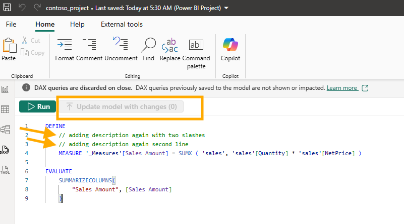
The button stayed at (0). I saved again, and Git showed the same pattern: Query 3.dax went from two empty lines to two comment lines, and _Measures.tmdl still held the original description.
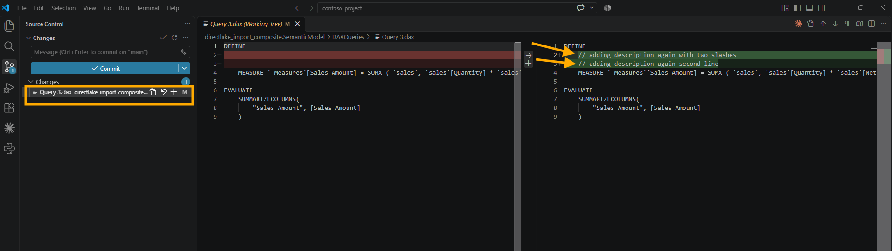
This one has a direct answer in the Comment and uncomment part of the Ribbon section in the DAX Query View article: two slashes comment out a line, and when the query runs, those lines are ignored. To DAX query view, my two new lines were not a description of anything.
That gave me the rule I took from the first half of the experiment. In DAX query view, three slashes can write a description, but taking them away is not an instruction to clear it.
Running the first query again showed where the model stood: fourteen measures without a description, and Sales Amount no longer among them.
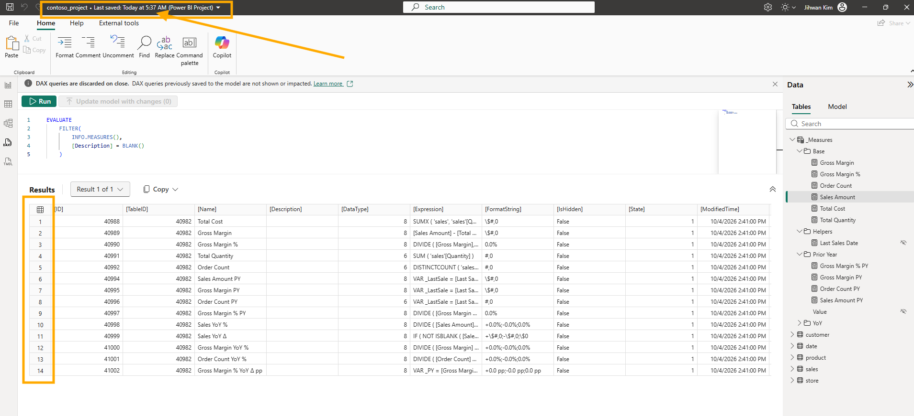
7. Letting AI Describe the Rest
Writing fourteen descriptions in DAX query view would have meant fourteen Define and evaluate tabs, or one long one. I took the file route instead and asked Claude Code in VS Code. The text in the screenshot is small, so here is the prompt as I typed it:
In this project, check how I experimented adding descriptions to dax measures in the folder C:\01 Git Project\contoso_project\directlake_import_composite.SemanticModel
Plan to add brief and intuitive description to all measures in the folder C:\01 Git Project\contoso_project\directlake_import_composite.SemanticModel
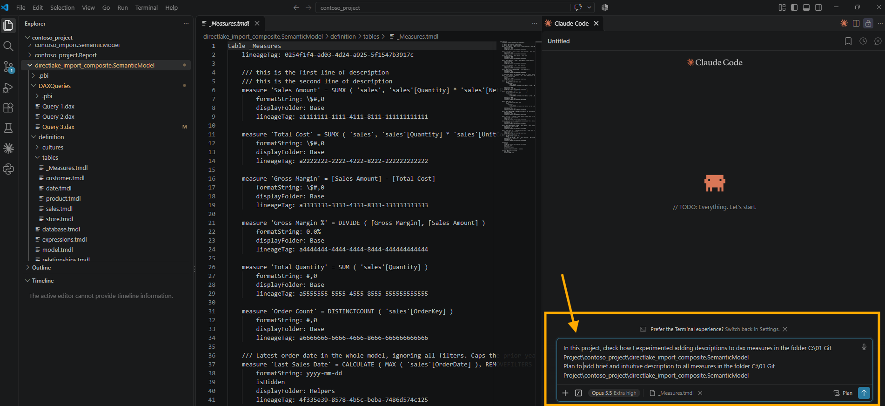
It wrote the descriptions straight into _Measures.tmdl, one /// line above each measure, without going through DAX query view at all.
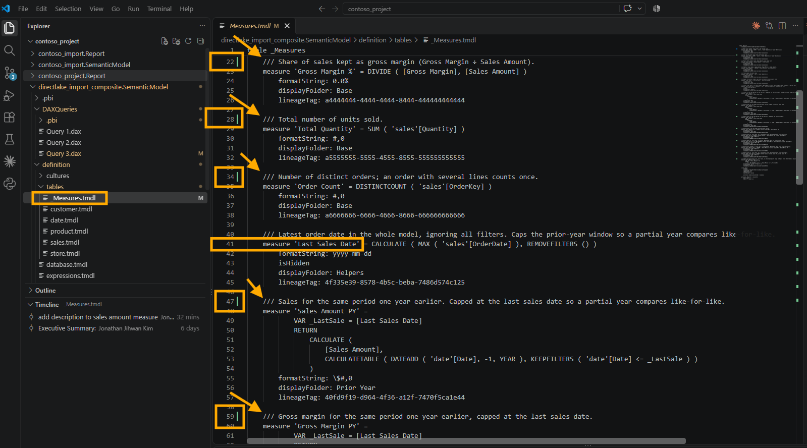
I read the diff before anything else. Every added line started with three slashes, no formula line changed, and Last Sales Date kept its original text. It also replaced my two test lines on Sales Amount with a real sentence, so fifteen measures got new text, and the file was able to change a description that DAX query view could not clear. I kept every description as written.
A file edited on disk still has to reach the open Desktop session, and through it the workspace model. The Apply external changes by using the Power BI Desktop Bridge section of the Edit Power BI Desktop project files outside Power BI Desktop article says external changes can also be applied programmatically by using the Power BI Desktop Bridge, and that is how these arrived. I wrote about the banner version of the same step in A Copied Page Folder Is Not a Page, and about the bridge itself in Letting AI Author a Live Power BI Desktop Report Through the Desktop Bridge.
Then I ran the first query once more, and it returned nothing.
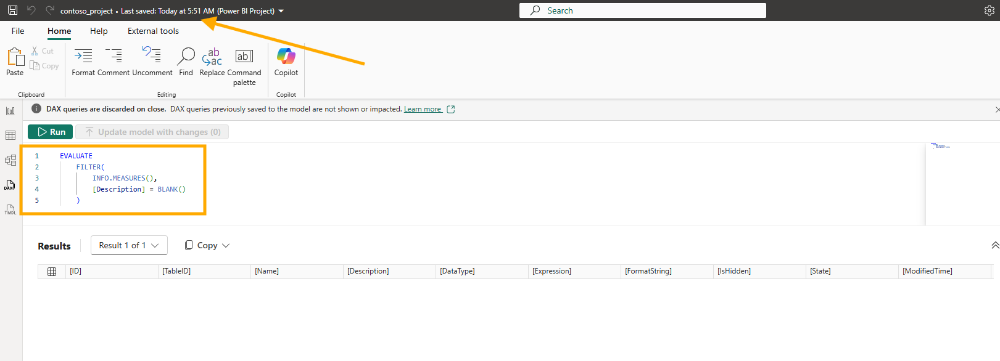
Without the filter, all sixteen measures came back with a description.
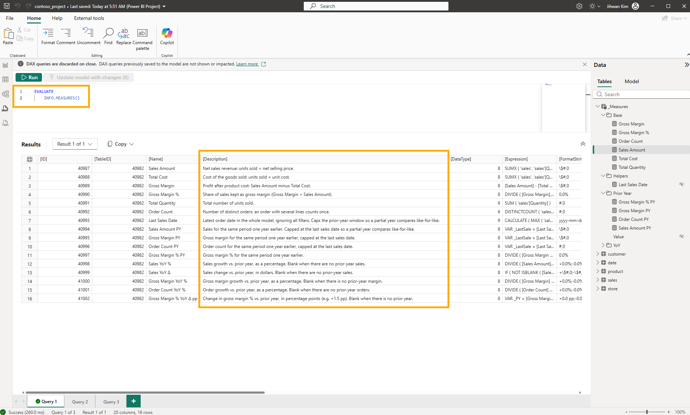
The descriptions are in the model, not only in the files. The Properties pane in Model view shows the new text in the Description box of Sales Amount PY.
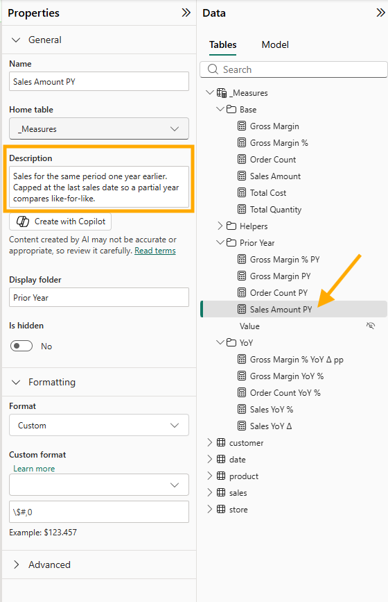
The same pane has a Create with Copilot button under that box, which would be a third way to write these.
8. From a DevOps Standpoint: The Same Two Lines in Two Files
From a DevOps standpoint, the most useful thing this experiment showed me is that the same text can sit in two files of one project and mean two different things.
Code review. If you are new to reviewing semantic model changes, descriptions are a good place to start, because they always have the same shape. In a table's .tmdl file, a description is the /// line, or lines, directly above the measure line it belongs to. When a change only adds or rewrites descriptions, every changed line in that file starts with three slashes, and the formula, formatString, displayFolder, and lineageTag lines underneath stay exactly as they were. That gives you a one-step check for a large batch like the one AI wrote for me: look for any changed line that does not start with ///. If you find one, the change did more than describe a measure, and that line needs a question before you approve.
Version control. Saving a PBIP after using DAX query view writes every open query tab into the repository as a .dax file. After my deletion test, my working tree held Query 3.dax without the two lines and _Measures.tmdl with them, so a reviewer who reads /// in a .dax file as a model change gets it wrong. Read the .tmdl files for the model.
That raises a question worth settling with your team before the folder fills up: should query tabs be committed at all? The DAXQueries\ folder section of the Power BI Desktop project semantic model folder article describes the folder as one file per DAX query view tab, saved as [Tab name].dax, and the list at the top of the same article marks only definition.pbism and, for TMDL, the definition folder as required. The way I would decide is by asking whether anyone will run the query again. The blank-description check from section 1 is worth committing, renamed from Query 1 to something that says what it does, because the file takes the tab name. A scratch tab like my Query 3.dax only adds noise to every pull request.
Automation. The blank-description query from section 1 is a check waiting to be automated. In Checking My Team's Rules Before the Pull Request I turned one sentence from my team's rules into a check that runs on the files, and the file version of this rule is easy to state: every measure line in a table file needs a /// line above it. I have not written that check yet.
Governance. Adding a description worked through both routes I tried, DAX query view and the TMDL file. Removing one did not work from DAX query view. So if your team ever cleans up descriptions, do not take a deleted /// line in a query tab as proof that the job is done. Open the .tmdl file after you save. If the lines are still above the measure, the description is still in the model.
A Note on Working with AI
The division of work was simple. I ran every step in DAX query view and took every screenshot. Claude Code wrote fifteen descriptions into _Measures.tmdl and applied them through the Desktop Bridge. What I want to pass on is why its part was easy to trust, because it came from the order I worked in, not from the AI.
First, I did one measure by hand before asking for fifteen. Adding two lines to Sales Amount myself showed me what a correct change looks like in _Measures.tmdl: three slashes, directly above the measure, and nothing else moving. Without that, I would have been reviewing the AI's diff against a guess.
Second, my prompt pointed at that experiment instead of explaining the syntax. I did not describe TMDL descriptions at all. I asked it to check how I had added one, so my own change became the specification, and the result followed it: /// lines above each measure, in the same file, with no formula touched.
Third, I measured the result with a check the AI did not write. The INFO.MEASURES() query from section 1 counted fifteen, then fourteen, then zero, and it reads the model, not the files. That difference matters. If the change had never been applied through the Bridge, the files would have looked perfect, and the query would still have said fourteen.
Closing Thoughts
I expected the three slashes to work like a switch, and they worked like a one-way write. The mental model I am keeping is about files: the .tmdl file says what the model contains, and the .dax file only says what I typed into a query tab.
There is plenty I did not test. I never edited the text of an existing description in DAX query view, never tried the Properties pane or Copilot to clear or write one, and never left a blank line between /// and MEASURE, which the TMDL article does not allow in a file.
The whole of it was two lines of text, six changed files after the first save, two saves that changed only a query file, and fifteen descriptions from AI, checked with one query.
I hope this helps having fun in writing measure descriptions with three slashes and embracing this new era of semantic models that carry their own documentation!